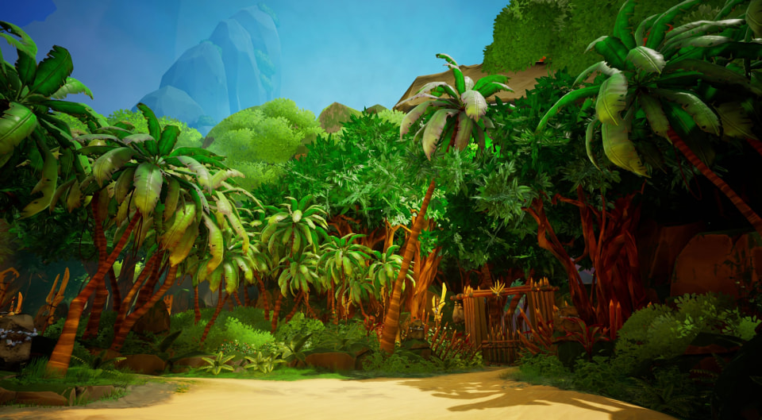
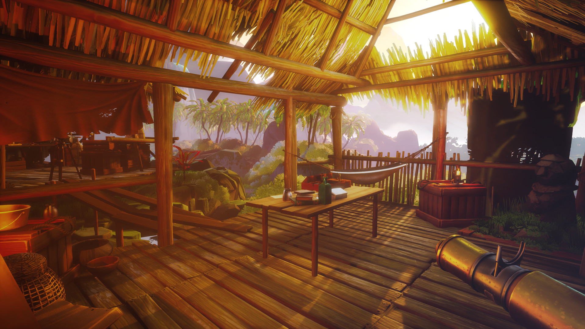

Call of the Sea
A Call of the Sea az Out of the Blue fejlesztőcsapat első játéka ez, és ahogy mindkét név mutatja a játékban nagy szerepet kap a tengerek mélysége. A játék folyamán Norah Everhart-ot irányítjuk aki eltűnt férje Harry Everhart felkutatására indul egy különös szigetre. Harry egy, a Norah betegségének gyógymódját keresni induló expedíció vezetése közben veszett el, és csak egy koordináta, egy különleges kés és egy kulcs érkezik meg Norah-hoz, miután egy hónapja nem hallott felőle.
A játék talán az elején egy kicsit a sétáló szimulátorok stílusára hajaz, viszont hamar kiderül, hogy itt a környezetbe tökéletesen beépített feladványokat kell megoldanunk. A fejtörők számomra a pont jó kategóriába tartoznak. Egyszer sem kellet utána néznem az interneten egy egy megoldásnak, és mégsem éreztem őket túl könnyűnek. A kettő, talán tökéletesen megalkotott puzzle a hatalmas kőorgonák beállítása, és a nyelvi elemek összepakolása volt. Ezt a kettőt kifelyezetten azért emelem ki, mert szinte láthatatlanul simultak bele a játék történetébe, és környezetébe. Az előbbi esetében az atmoszféra amit megteremtett mind a megoldás közben mind az után magával ragadó és monumentális volt.
Ez az utóbbi aspektus kifejezetten igaz a játék látványvilágának egészére. Minden tér látványos, és úszik a színekben. A legtöbb esetben nem egy szobába vagyunk bezárva ahonnan ki kell jutnunk, hanem kinn a szabadban, és ez hatalmas teret enged meg a tervezőknek, hogy tele pakolják modellekkel, és a háttérben meghúzódó gigászi látképekkel. A játék talán egyetlen számomra észrevehető hiányosságát viszont ugyan itt a modellek terén vétette. A vége felé megfigyelhető egyre több összecsúszó textúra, ami talán a kiadási határidő közelségét jelzi, mint az az alábbi videón is látszik.
A történetmesélés szempontjából maximum annyiban lehet kifogásolható, hogy az képeken és feljegyzéseken keresztül van elmesélve, amiket a játék folyamán szedünk össze. Viszont ezeket sokszor olvasni kell így nem mindig teljesül a vizuális történetmesélés. Szerencsére viszont főhősünk folyton kommentálja azt amit lát, így az ő szemével is megismerhetjük a világot.
Maga a történet hamar egyértelművé válik, hogy a betegség főhősnőnkön valami igen fontosat rejt. És igen, eléggé az elején kiderül, hogy ennek egy kis Lovecraft-i világhoz van köze. Szerintem ez is jól működik együtt a történet többi részével, mivel nem ez játssza a főszerepet. Ez nem egy horror játék a megőrülésről, mint ahogy azt ez a világ magával szokta hozni, ez inkább szól két ember kapcsolatáról. Nagyjából csak a környezeti elemeket vették át a játékhoz, és ez nagyon jól áll neki.
--SPOILER--Viszont itt elérkeztünk ahhoz a részhez, ahol ki kell raknom a SPOILER - t, hogy a végéről is beszélhessek. Merthogy a végén a játék egy dilemmához állít, amiből egyáltalán nem volt addig a játékban. Ez pedig nem másról szól, mint hogy Norah elfogadja e a sorsát és, hogy egy halhatatlan vízalatti lénnyé fejlődjön tovább, vagy hogy Harry-vel maradjon, és tovább élje eddigi életét halálos betegségével együtt. Különösen nehéz döntés, és talán azért, mert Norah kommentjein és Harry levelein keresztül nagyon jól meg tudjuk ismerni a két karakter egymás iránti szeretetét, és hogy mennyire összetartoznak. Így ez a döntési lehetőség engem személy szerint meglepett, és el kellet rajta erősen gondolkodnom.
--Spoiler Vége--Az aláfestőzene szinte láthatatlanul illeszkedik bele a játékba, ami számomra azt szokta jelenteni, hogy azt igazán egymáshoz írták. Call of the Sea (Original Game Soundtrack)
Összességében, annyit kell mondanom, hogy szinte minden szempontjából a Call of the Sea egy pompásan elkészített puzzle játék, amelyben a történet tökéletesen összefűződik a játékos elé állított problémákkal.
Köszönöm hogy végigolvastad ezt a bemutatást! Ha valami kérdésed, megjegyzésed lenne a játékkal kapcsolatban, esetleg valamilyen másik indie játékot szeretnél javasolni, azt a kezdőlap alján megteheted.